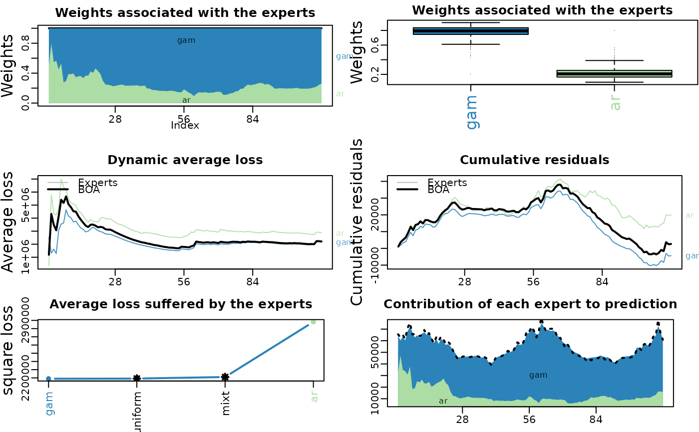

The package opera performs, for regression-oriented time-series,
predictions by combining a finite set of forecasts provided by the user.
More formally, it considers a sequence of observations Y (such as
electricity consumption, or any bounded time series) to be predicted step
by step. At each time instance t, a finite set of experts
(basicly some based forecasters) provide predictions x of the next
observation in y. This package proposes several adaptive and robust
methods to combine the expert forecasts based on their past performance.
References
Prediction, Learning, and Games. N. Cesa-Bianchi and G. Lugosi.
Forecasting the electricity consumption by aggregating specialized experts;
a review of sequential aggregation of specialized experts, with an
application to Slovakian an French contry-wide one-day-ahead (half-)hourly
predictions, Machine Learning, in press, 2012. Marie Devaine, Pierre
Gaillard, Yannig Goude, and Gilles Stoltz
Contributions to online robust aggregation: work on the approximation error and on
probabilistic forecasting. Pierre Gaillard. PhD Thesis, University Paris-Sud, 2015.
Author
Pierre Gaillard <pierre@gaillard.me>
Examples
#' library('opera') # load the package set.seed(1) # Example: find the best one week ahead forecasting strategy (weekly data) # packages library(mgcv) # import data data(electric_load) idx_data_test <- 620:nrow(electric_load) data_train <- electric_load[-idx_data_test, ] data_test <- electric_load[idx_data_test, ] # Build the expert forecasts # ########################## # 1) A generalized additive model gam.fit <- gam(Load ~ s(IPI) + s(Temp) + s(Time, k=3) + s(Load1) + as.factor(NumWeek), data = data_train) gam.forecast <- predict(gam.fit, newdata = data_test) # 2) An online autoregressive model on the residuals of a medium term model # Medium term model to remove trend and seasonality (using generalized additive model) detrend.fit <- gam(Load ~ s(Time,k=3) + s(NumWeek) + s(Temp) + s(IPI), data = data_train) electric_load$Trend <- c(predict(detrend.fit), predict(detrend.fit,newdata = data_test)) electric_load$Load.detrend <- electric_load$Load - electric_load$Trend # Residual analysis ar.forecast <- numeric(length(idx_data_test)) for (i in seq(idx_data_test)) { ar.fit <- ar(electric_load$Load.detrend[1:(idx_data_test[i] - 1)]) ar.forecast[i] <- as.numeric(predict(ar.fit)$pred) + electric_load$Trend[idx_data_test[i]] } # Aggregation of experts ########################### X <- cbind(gam.forecast, ar.forecast) colnames(X) <- c('gam', 'ar') Y <- data_test$Load matplot(cbind(Y, X), type = 'l', col = 1:6, ylab = 'Weekly load', xlab = 'Week')# How good are the expert? Look at the oracles oracle.convex <- oracle(Y = Y, experts = X, loss.type = 'square', model = 'convex')#> Warning: The best convex oracle is only approximated (using optim).oracle.convex#> Call: #> oracle.default(Y = Y, experts = X, model = "convex", loss.type = "square") #> #> Coefficients: #> gam ar #> 0.751 0.249 #> #> rmse mape #> Best expert oracle: 1480 0.0202 #> Uniform combination: 1480 0.0206 #> Best convex oracle: 1450 0.0200# Is a single expert the best over time ? Are there breaks ? oracle.shift <- oracle(Y = Y, experts = X, loss.type = 'percentage', model = 'shifting') plot(oracle.shift)oracle.shift#> Call: #> oracle.default(Y = Y, experts = X, model = "shifting", loss.type = "percentage") #> #> 0 shifts 28 shifts 55 shifts 83 shifts 111 shifts #> mape: 0.0202 0.0159 0.0154 0.016 0.0209# Online aggregation of the experts with BOA ############################################# # Initialize the aggregation rule m0.BOA <- mixture(model = 'BOA', loss.type = 'square') # Perform online prediction using BOA There are 3 equivalent possibilities 1) # start with an empty model and update the model sequentially m1.BOA <- m0.BOA for (i in 1:length(Y)) { m1.BOA <- predict(m1.BOA, newexperts = X[i, ], newY = Y[i]) } # 2) perform online prediction directly from the empty model m2.BOA <- predict(m0.BOA, newexpert = X, newY = Y, online = TRUE) # 3) perform the online aggregation directly m3.BOA <- mixture(Y = Y, experts = X, model = 'BOA', loss.type = 'square') # These predictions are equivalent: identical(m1.BOA, m2.BOA) # TRUE#> [1] TRUE#> [1] TRUE#> Aggregation rule: BOA #> Loss function: square loss #> Gradient trick: TRUE #> Coefficients: #> gam ar #> 0.689 0.311 #> #> Number of experts: 2 #> Number of observations: 112 #> Dimension of the data: 1 #> #> rmse mape #> BOA 1470 0.0201 #> Uniform 1480 0.0206